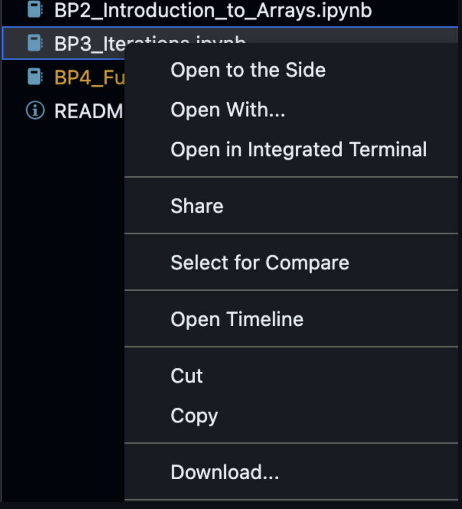
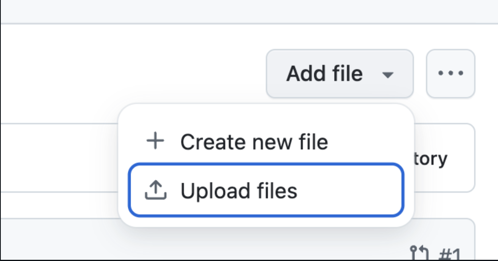

As you progress through the course, you will complete one assignment per fortnightly lesson. Assignments are given as Jupyter Notebook templates, found inside your Assignments folder, and must be submitted before the next lesson release (typically before 00:00, 14 days after release).
Timely submissions are graded within 14 days, and late submissions may delay receiving feedback and certification. For submission extensions due to extenuating circumstances, please contact hello@scryptiq.ai, and we will make arrangements for you to submit your work at a convenient time.
A guided video workflow of how to submit your assignment (from timestamp 3:12), is given in the tutorial video, below:
Workflow
Below is a step-by-step instruction on how to submit an assignment through GitHub Codespaces. Codespaces allow you to create a remote, online instance of Microsoft Visual Studio Code. This means that any issues with hardware, software, package dependencies should be taken care of.
While they are mostly great, some students do sometimes run into issues with Codespaces, when submitting assignments. If you are having any difficulties, please contact us at hello@scryptiq.ai.
We recommend Google Chrome as the best browser for stability and ease, however it should work with the other mainstream browsers.
Assignment Workflow
1. Understanding your assignment folder:
- Navigate to your lesson repository and open the Assignments folder
- Items within: ‘XX_Assignment.ipynb’ - a Jupyter notebook containing the assignment questions and spaces to answer them. Please fill in this file.
- Feedback folder - where your feedback will be uploaded within 14 days
- More information on feedback is provided within this folder
- Any data needed for assignment will be in the Data folder located in the
2. Creating a Codespace:
- Click the green Code button and select the Codespaces tab from your home screen.
- Click the ‘Create codespace on main’ button.
- add new information.
Codespace setup may take several minutes and can be affected by your internet connection. Click Building codespace in the bottom right to see the your progress. It will indicate, in this log, when the Codespace creation is complete.
3. Open & set up your assignment:
- Find your assignment notebook using the file Explorer tab (on the left - an icon of two overlaid pages).
- In the top right, if you don’t already see scryptiq_VE displayed, please click Select Kernel (top right) → Select Python Environments.
- Choose scryptiq_VE (our pre-configured environment)
If properly selected, the name scryptiq_VE will be displayed in the top right where you selected the kernel originally alongside the Python version. Your Notebooks will then run code, as expected.
4. Complete your assignment:
- Cells are the basis of Jupyter notebooks, in brief they are a distinct container
Python code.
- Cells allow you to break your work into logical segments that can be run
- Add code cells using the + Code button
- Run cells with the play button (a little triangle) or Ctrl + Enter
Your work autosaves while your internet connection remains active. But we do recommend that, before closing a Codespace tab or window, you save your work manually (in the ‘File’ menu) - just in case.
Submission Workflow
1. Submit your completed assignment:
Only complete these next steps when you are ready to submit your assignment. If you are pausing your work simply exit the browser as normal and begin again with step 2 where under the Codespaces tab there will be your old workspace. Your work should be saved within.
- Click the Source Control tab (fork symbol) on the far left. This opens a VSCode interface for Git control
- Click the + symbol next to your file to stage changes
- Enter a commit message (e.g., "Assignment completed”)
- Click the green Commit button, then press the Sync Changes button.
This is the typical workflow of git: Save changes → Stage changes → Commit (with message) → Sync (push) to the main repo (typically in the cloud).
2. Delete your Codespace after use (mandatory):
After submitting your assignment, you must delete your codespace. This step is essential, as active codespaces consume computational resources on GitHub's servers. Leaving too many codespaces running may result in GitHub restricting your access to this feature. Each codespace operates as a dedicated virtual computer instance that requires resources to maintain.
Head to the Codespaces section to see the steps.
Troubleshooting Codespace-based submissions
Occasionally, you may run into error dialogues when trying to synchronise your work out of your Codespace, back to your GitHub repository, during submission. This often occurs when a change has been made to a repository after the Codespace was first built, causing conflicts between the environment in the Codespace, and its counterpart in the main repository. Here are two easy solutions that should fix this for you. Workaround A is user-interface based, and is more intuitive to follow; whereas workaround B is a cleaner fix, that involves using the Codespace's terminal.
Workaround A (UI-based fix)
This solution offers a simple (but slightly less elegant) workflow to ensure your assignment is submitted.
- Your work should autosave in Codespaces, but to be doubly sure, manually save using cmd + s on a Mac, or ctrl + s on a Windows PC.
- Download your work. In the 'Explore' tab on the far left, you will see a list of files, including the XYZ_Assignment.ipynb file that you wish to submit. Right-click this, and click 'Download'.

- Go back to your main GitHub repository, and click on the 'Assignments' folder. Click Add File in the top right, and then Upload Files.

- Drag your locally downloaded assignment file from your Explorer/Finder window into your internet browser window, and add a commit message into the first 'Commit Changes' field, as normal: i.e. 'Assignment submitted'.
- Click the green Commit changes button, and you will have submitted your assignment.
Workaround B (terminal-based fix)
This solution outlines how to fix this within the Codespace. If you would like to brave the command line (we recommend you download a copy of your work locally as a backup, first [as per steps 1 & 2, above]), please follow these instructions:
- Open the terminal pane in your Codespace (usually cmd + J on a Mac, or ctrl + J on a Windows machine). This should toggle the Terminal pane at the bottom of the window.
- Type in the following two commands:
<press Enter>
Note: If this doesn't work, try: git pull origin master
git config pull.rebase false
<press Enter>
- You should then be able to submit the assignment, as usual. If you’re hesitant, follow solution A, above.
Local assignment submission
For those who prefer to work offline or bypass the Codespace method, you can complete assignments on your local machine using Microsoft Visual Studio Code (VS Code). This approach allows you to work without an active internet connection and submit your work when you reconnect by cloning the repository on GitHub to your local repository. From which any changes can be pushed back to main. For information on how to set this up, please read through the Course Setup section in the Python Orientation materials.